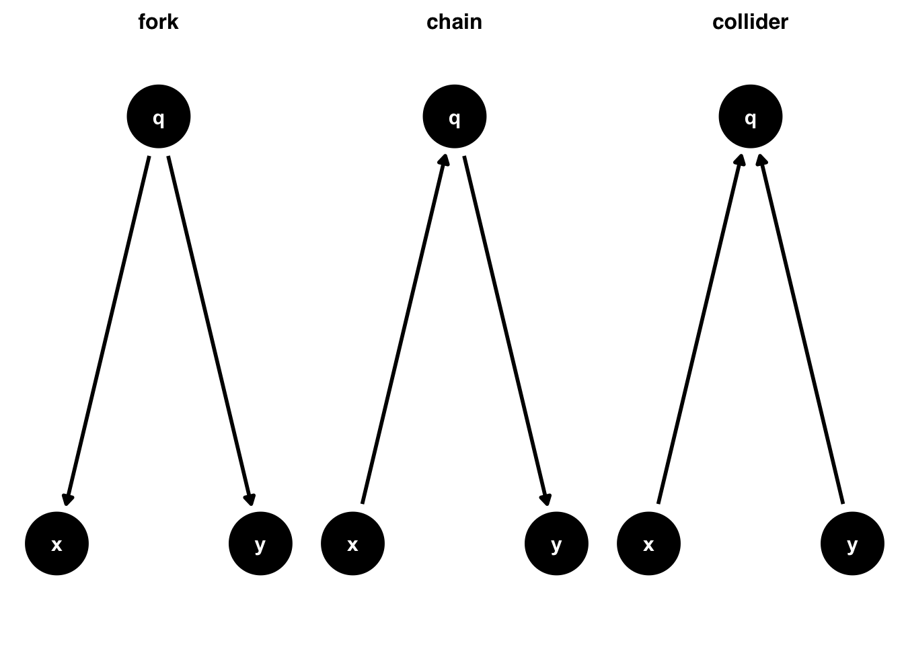
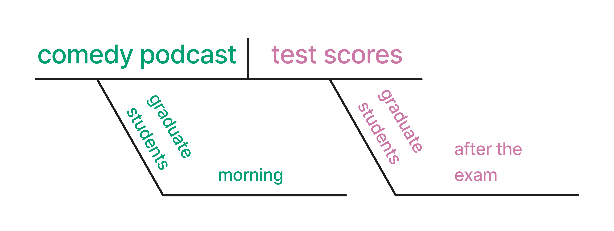
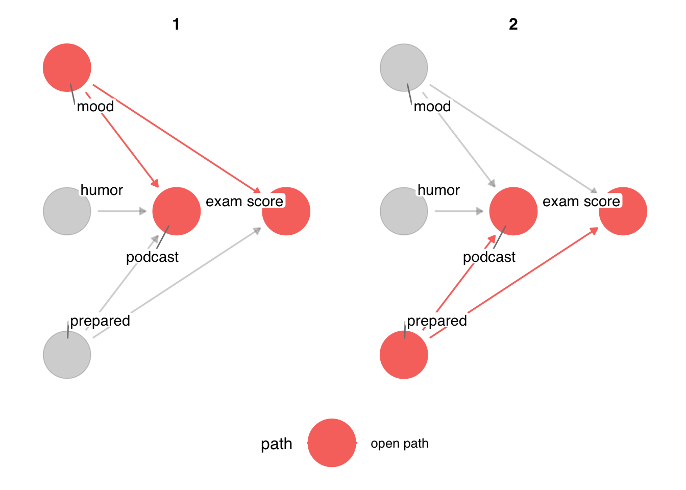
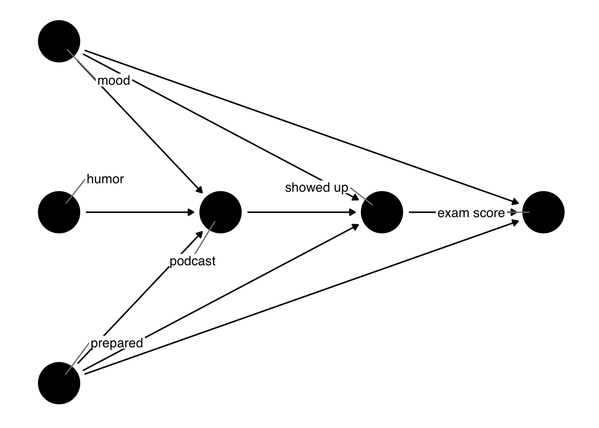
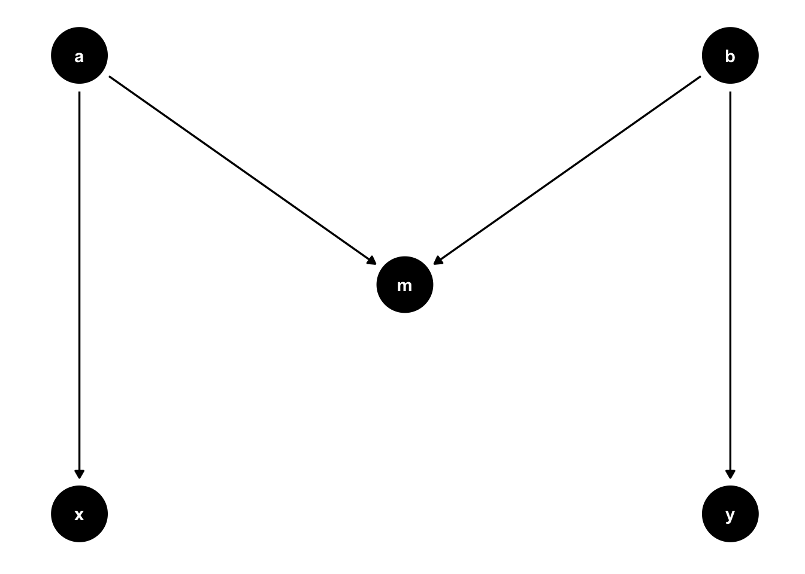
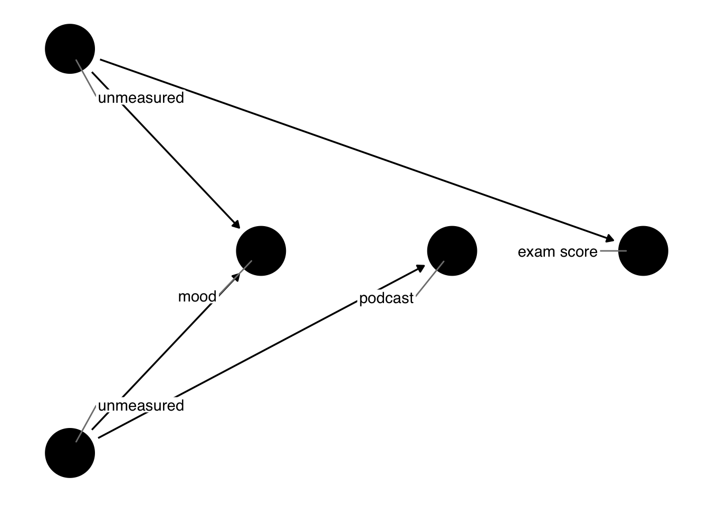
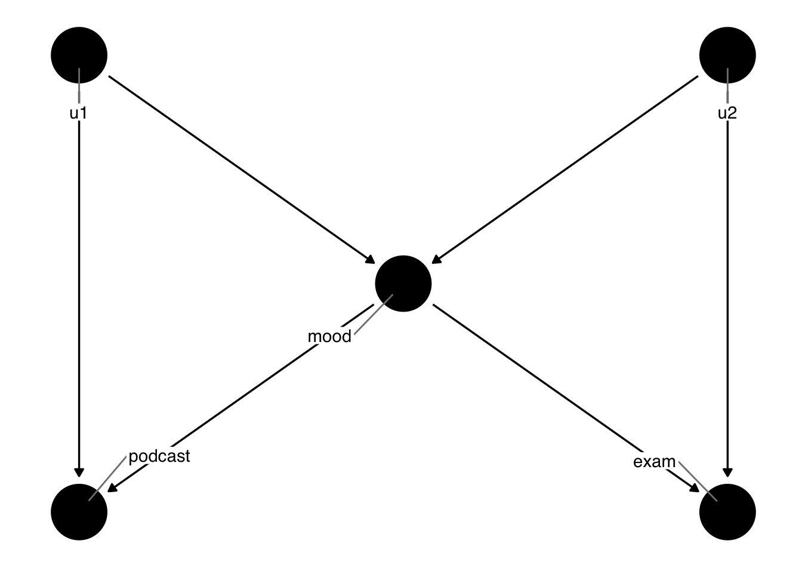

5 Expressing causal questions as DAGs
5.1 Visualizing Causal Assumptions
Draw your assumptions before your conclusions –Hernán and Robins (2021)
Causal diagrams are a tool to visualize your assumptions about the causal structure of the questions you’re trying to answer. In a randomized experiment, the causal structure is quite simple: while there may be many causes of an outcome, the only cause of the exposure is the randomization process itself (we hope!). In many non-randomized settings, however, the structure of your question can be a complex web of causality. Causal diagrams help communicate what we think this structure looks like. In addition to being open about what we think the causal structure is, causal diagrams have incredible mathematics properties that allow us to identify a way to estimate unbiased causal effects even with observational data.
Causal diagrams are also increasingly common. Data collected as a review of the use of causal diagrams in applied health research papers show a drastic increase in use over time (Tennant et al. 2020).
The type of causal diagrams we use are also called directed acyclic graphs (DAGs). These graphs are directed because they include arrows going in a specific direction. They’re acyclic because they don’t go in circles; a variable can’t cause itself, for instance. DAGs are used for a wide variety of problems, but we’re specificaly concerned with causal DAGs. This class of DAGs is also sometimes referred to as Structural Causal Models (SCMs) because they are a model of the causal structure of a question.
DAGs down under
We highly recommend asking an Australian friend about DAGs.
DAGs depict causal relationships between variables. Visually, the way they depict variables is as edges and nodes. Edges are the arrows going from one variable to another, also sometimes called arcs or just arrows. Nodes are the variables themselves, sometimes called vertices, points, or just variables. in Figure fig-dag-basic, there are two nodes: x and y and one edge going from x to y. Here, we are saying that x causes y. In some capacity, y “listens” to x.

If we’re interested in the causal effect of x on y, we’re trying to estimate a numeric representation of that arrow. Usually, though, there are many other variables and arrows in the causal structure of a given question. A series of arrows is called a path. There are three types of paths you’ll see in DAGs: forks, chains, and colliders (sometimes called inverse forks).

Forks represent a common cause of two variables. Here, we’re saying that q causes both x and y. This is the traditional definition of a confounder. They’re called forks because the arrows from x to y are in different directions. Chains, on the other hand, represent a series of arrows going in the same direction. Here q is called a mediator: it is along the causal path from x to y. In this diagram, the only path from x to y is the one mediated through q. Finally, a collider is a path where two arrowheads meet at a variable. Because causality always goes forward in time, this naturally means that the collider variable is caused by two other variables. Here, we’re saying that x and y both cause q.
Are DAGs SEMs?
If you’re familiar with structural equation models (SEMs), a modeling technique commonly used in psychology and other social science settings, you may notice some similarities between SEMs and DAGs. In fact, DAGs are a form of non-parametric SEM. SEMs estimate entire graphs using parametric assumptions. Causal DAGs, on the other hand, don’t estimate anything; an arrow going from one variable to another says nothing about the strength or functional form of that relationship, only that we think it exists.
One of the major benefits of DAGs is that they help us identify sources of bias and, often, provide clues in how to address them. However, talking about an unbiased effect estimate only makes sense when we have a specific causal question in mind. Since each arrow represents a cause, it’s causality all the way down, so no individual arrow is inherently problematic. Here, we’re interested in the effect of x on y. This question defines which paths we’re interested in and which we’re not.
These three types of paths have different implications for the statistical relationship between x and y. If we only look at the correlation between the two variables under these assumptions:
- In the fork,
xandywill be associated, despite there being no arrow fromxtoy. - In the chain,
xandyare related but only throughq. - In the collider,
xandywill not be related.
Paths that transmit association are called open paths. Paths that do not transmit association are called closed paths. Forks and chains are open while colliders are closed.
So, should we adjust for q? That depends on the nature of the path. Forks are confounding paths. Because q causes both x and y, x and y will have a spurious association. They both contain information from q, their mutual cause, and that mutual causal relationship makes x and y associated statistically. Adjusting for q will block the bias from confounding and give us the true relationship between x and y.
Adjustment
We can use a variety of techniques to account for a variable. We use the term “adjustment” to generally refer to any technique that removes the effect of variables we’re not interested in.
Figure fig-confounder-scatter depicts this effect visually. Here, x and y are continuous, and by definition of the DAG, they are unrelated. q, however, causes both. The unadjusted effect is biased because it includes information about the open path from x to y via z. Within levels of z, however, x and y are unrelated.

For chains, whether or not we adjusting for mediators depends on the research question. Here, adjusting for q would result in a null estimate of the effect of x on y. Because the only effect of x on y is via q, no other effect remains. The effect of x on y mediated by q is called the indirect effect, while the effect of x on y directly is called the direct effect. If we’re only interested in the direct effect, controlling for q might be what we want. If we want to know about both effects, we shouldn’t try to adjust for q. We’ll learn more estimating different mediation effects in sec-mediation.
Figure fig-mediator-scatter shows this effect visually. The unadjusted effect of x on y represents the total effect. Since the total effect is due entirely to the path mediated by q, when we adjust for q, no relationship remains. This is the direct effect. Neither of these effects is due to bias but rather each answers a different research question.

Colliders are different. In the collider DAG of Figure fig-dag-path-types, x and y are not associated, but both cause q. Adjusting for q has the opposite effect than with confounding: it opens a biasing pathway. Sometimes, people draw the path opened up by conditioning on a collider connecting x and y.
Visually, we can see this happen when x and y are continuous and q is binary. In Figure fig-collider-scatter, when we don’t include q, we find there is no relationship between x and y. That’s the correct result. However, when we include q, we can detect information about both x and y, and they appear correlated: across levels of x, those with q = 0 have lower levels of y. Association seemingly flows back in time. Of course, that can’t happen from a causal perspective, so controlling for q is the wrong thing to do. We end up with a biased effect of x on y.

How can this be? Since x and y happen before q, q can’t have an impact on them. Let’s turn the DAG on its side and consider Figure fig-collider-time. If we break down the two time points, at time point 1, q hasn’t happened yet, and x and y are unrelated. At time point 2, q happens due to x and y. But causality only goes forward in time. q happening later can’t change the fact that x and y happened independently at time point 1.

Causality only goes forward. Association, however, is time-agnostic. It’s just an observation about the numerical relationships between variables. When we control for the future, we run the risk of introducing bias. It’s challenging to develop an intuition for this. Consider a case where x and y are the only causes of q, and all three variables are binary. When either x or y equals 1, then q happens. If we know q = 1 and x = 0 then logically it must be that y = 1. Thus, knowing about q gives us information about y via x. This is an extreme example, but it shows how this type of bias, sometimes called collider-stratification bias or selection bias, occurs: conditioning on q provides statistical information about x and y and distorts their relationship.
Exchangability revisited
We commonly refer exchangability as the assumption of no confounding. Actually, this isn’t quite right. It’s the assumption of no open, non-causal paths. Many times, these are confounding pathways. However, paths can also be opened by conditioning on a collider. Even though these aren’t confounders, it creates non-exchangability between the two groups: they are different in a way that matters to the exposure and outcome.
Open, non-causal paths are also called backdoor paths. We’ll use this terminology often because it captures the idea well: these are any open paths that are biasing the effect we’re interested in estimating
Correctly identifying the causal structure between the exposure and outcome thus helps us 1) communicate the assumptions we’re making about the relationships between variables and 2) identify sources of bias. Importantly, in doing 2), we are also often able to identify ways to prevent bias based on the assumptions in 1). In the simple case of three DAGs in Figure fig-dag-path-types, we know whether or not to control for q depending on the nature of the causal structure. The set or sets of variables we need to adjust for is called the adjustment set. DAGs can help us identify adjustment sets even in complex settings.
What about interaction?
DAGs don’t make a statement about interaction or effect estimate modification even though they are an important part of inference. Technically, interaction is a matter of the functional form of the relationships in the DAG. Much as we don’t need to specify how we’re going to model a variable in the DAG (e.g., with splines), we don’t need to specify how variables statistically interact with one another. That’s a matter for the modeling stage.
There are several ways we use interactions in causal inference. In one extreme, they are simply a matter of functional form: interaction terms are included in models but marginalized over to get an overall causal effect. In the other extreme, we’re interested in joint causal effects, where the two variables interacting with each other are both causal. In between, we can use interaction terms to identify heterogenous causal effects, effects which vary by a second variable that is not assumed to be causal. As with many tools in causal inference, we use the same statistical technique many ways to answer different questions.
Many people have tried ways of expressing interaction in DAGs using different types of arcs, nodes, and other annotations, but no approach has taken off as the preferred way.
Let’s take a look at an example in R. We’ll learn how to build DAGs, visualize them, and identify important information like adjustment sets.
5.2 DAGs in R
First, let’s consider the a research question: Does listening to a comedy podcast the morning before an exam improve graduate students test scores? We can diagram this using the method describe in sec-diag (Figure fig-diagram-podcast).

The main tool we’ll use for making DAGs is ggdag. ggdag is a package that connects ggplot2, the most powerful visualization tool in R, to dagitty, an R package with sophisticated algorithms for querying DAGs.
To create a DAG object, we’ll use the dagify() function.dagify() returns a dagitty object that works with both the dagitty and ggdag packages. The dagify() function takes formulas, separated by commas, that specify causes and effects, with the left element of of the formula specifying the effect and the right all of the factors that cause it. This is just like the type of formula we specify for most regression models in R.
dagify(
effect1 ~ cause1 + cause2 + cause3,
effect2 ~ cause1 + cause4,
...
)What are all of the factors that cause graduate students to listen to a podcast the morning before an exam? What are all of the factors that could cause a graduate student to do well on a test? Let’s posit some here.
library(ggdag)
dagify(
podcast ~ mood + humor + prepared,
exam ~ mood + prepared
)dag {
exam
humor
mood
podcast
prepared
humor -> podcast
mood -> exam
mood -> podcast
prepared -> exam
prepared -> podcast
}In the code above, we assume that:
- a graduate student’s mood, sense of humor, and how prepared they feel for the exam could influence whether they listened to a podcast the morning of the test
- their mood and how prepared they are also influences their exam score
Notice we do not see podcast in the exam equation; this means that we assume that there is no causal relationship between podcast and the exam score.
There are some other useful arguments you’ll often find yourself supplying to dagify():
exposureandoutcome: Telling ggdag the variables that are the exposure and outcome of your research question is required for many of the most useful queries we can make of DAGs.latent: This argument lets us tell ggdag that some variables in the DAG are unmeasured. This is really useful for identifying valid adjustment sets with the data we actually have.coords: Coordinates for the variables. You can choose between algorithmic or manual layouts, as discussed in below. We’ll usetime_ordered_coords()here.labels: A character vector of labels for the variables.
Let’s create a DAG object, podcast_dag, that has some of these attributes, then visualize the DAG with ggdag(). ggdag() returns a ggplot object, so we can add additional layers to the plot like themes.
podcast_dag <- dagify(
podcast ~ mood + humor + prepared,
exam ~ mood + prepared,
coords = time_ordered_coords(
list(
# time point 1
c("prepared", "humor", "mood"),
# time point 2
"podcast",
# time point 3
"exam"
)
),
exposure = "podcast",
outcome = "exam",
labels = c(
podcast = "podcast",
exam = "exam score",
mood = "mood",
humor = "humor",
prepared = "prepared"
)
)
ggdag(podcast_dag, use_labels = "label", text = FALSE) +
theme_dag()
For the rest of the chapter, we’ll use theme_dag(), a ggplot theme from ggdag meant for DAGs.
theme_set(
theme_dag() %+replace%
theme(
legend.position = "bottom",
strip.text.x = element_text(margin = margin(2, 0, 2, 0, "mm"))
)
)
DAG coordinates
You don’t need to specify coordinates to ggdag. If you don’t, it uses algorithms designed for automatic layouts. There are many such algorithms, and they focus on different aspects of the layout, e.g. the shape, the space between the nodes, minimizing how many edges cross, etc. These layout algorithms usually have a component of randomness, so it’s good to use a seed if you want to get the same result.
# no coordinates specified
set.seed(123)
pod_dag <- dagify(
podcast ~ mood + humor + prepared,
exam ~ mood + prepared
)
# automatically determine layouts
pod_dag |>
ggdag(text_size = 2.8)
We can also ask for a specific layout, e.g. the popular Sugiyama algorithm for DAGs
pod_dag |>
ggdag(layout = "sugiyama", text_size = 2.8)
For causal DAGs, the time-ordered layout algorithm is often best, which we can specify with time_ordered_coords() or layout = "time_ordered". We’ll discuss time ordering in greater detail in sec-time-ordered. Earlier, we explicitly told ggdag which variables were at which time points, but we don’t need to. Notice, though, that the time ordering algorithm puts podcast and exam at the same timepoint since one doesn’t cause another (and thus predate it). We know that’s not the case: listening to the podcast happened before taking the exam.
pod_dag |>
ggdag(layout = "time_ordered", text_size = 2.8)
You can also manually specify coordinates using a list or data frame and provide them to the coords argument of dagify(). Additionally, because ggdag is based on dagitty, you can use dagitty.net to create and organize a DAG using a graphical interface, then export the result as dagitty code for ggdag to consume.
Algorithmic layouts are often nice for fast visualization of DAGs or particularly complex graphs. Once you want to share your DAG, it’s usually best to be a little more intentional about the layout, perhaps by specifying the coordinates manually. time_ordered_coords() is often the best of both worlds, and we’ll use it for most DAGs in this book.
We’ve specified the DAG for this question and told ggdag what the exposure and outcome of interest are. According to the DAG, there is no direct causal relationship between listening to a podcast and exam scores. Are there any other open paths? ggdag_paths() takes a DAG and visualizes the open paths. In Figure fig-paths-podcast, we see two open paths: podcast <- mood -> exam" and podcast <- prepared -> exam. These are both forks—confounding pathways. Since there is no causal relationship between listening to a podcast and exam scores, the only open paths are backdoor paths, these two confounding pathways.
# TODO: Why aren't okabe-ito colors propgating here and other spots in ggdag?
podcast_dag |>
# show the whole dag as a light gray "shadow"
# rather than just the paths
ggdag_paths(shadow = TRUE, text = FALSE, use_labels = "label")
dagify() returns a dagitty() object, but underneath the hood, ggdag converts dagitty objects to tidy DAGs, a structure that holds both the dagitty object and a dataframe about the DAG. This is handy if you want to manipulate the DAG programatically.
podcast_dag_tidy <- podcast_dag |>
tidy_dagitty()
podcast_dag_tidy# A DAG with 5 nodes and 5 edges
#
# Exposure: podcast
# Outcome: exam
#
# A tibble: 7 × 9
name x y direction to xend yend
<chr> <int> <int> <fct> <chr> <int> <int>
1 exam 3 0 <NA> <NA> NA NA
2 humor 1 0 -> podcast 2 0
3 mood 1 1 -> exam 3 0
4 mood 1 1 -> podcast 2 0
5 podcast 2 0 <NA> <NA> NA NA
6 prepared 1 -1 -> exam 3 0
7 prepared 1 -1 -> podcast 2 0
# ℹ 2 more variables: circular <lgl>, label <chr>Most of the quick plotting functions transform the dagitty object to a tidy DAG if it’s not already, then manipulate the data in some capacity. For instance, dag_paths() underlies ggdag_paths(); it returns a tidy DAG with data about the paths. You can use several dplyr functions on these objects directly.
podcast_dag_tidy |>
dag_paths() |>
filter(set == 2, path == "open path")# A DAG with 3 nodes and 2 edges
#
# Exposure: podcast
# Outcome: exam
#
# A tibble: 4 × 11
set name x y direction to xend yend
<chr> <chr> <int> <int> <fct> <chr> <int> <int>
1 2 exam 3 0 <NA> <NA> NA NA
2 2 podcast 2 0 <NA> <NA> NA NA
3 2 prepar… 1 -1 -> exam 3 0
4 2 prepar… 1 -1 -> podc… 2 0
# ℹ 3 more variables: circular <lgl>, label <chr>,
# path <chr>Tidy DAGs are not pure data frames, but you can retrieve either the dataframe or dagitty object to work with them directly using pull_dag_data() or pull_dag(). pull_dag() can be useful when you want to work with dagitty functions:
library(dagitty)
podcast_dag_tidy |>
pull_dag() |>
paths()$paths
[1] "podcast <- mood -> exam"
[2] "podcast <- prepared -> exam"
$open
[1] TRUE TRUEBackdoor paths pollute the statistical association between podcast and exam, so we need to account for them. ggdag_adjustment_set() visualizes any valid adjustment sets implied by the DAG. Figure fig-podcast-adustment-set shows variables that are adjusted for as squares. Any arrows that were coming out of adjusted variables are removed from the DAG, because the path is longer open at that variable.
ggdag_adjustment_set(
podcast_dag,
text = FALSE,
use_labels = "label"
)
Figure fig-podcast-adustment-set shows the minimal adjustment set. By default, ggdag returns the set(s) that can close all backdoor paths with the fewest number of variables possible. In this DAG, that’s just one set: mood and prepared. This makes sense, because there are two backdoor paths and the only other variables on them besides the exposure and outcome are these two variables. So, at minimum, we need to account for both to get a valid estimate.
ggdag() and friends usually use tidy_dagitty() and dag_*() or node_*() functions to change the underlying data frame. Similarly, the quick plotting functions use ggdag’s geoms to visualize the resulting DAG(s). In other words, you can use the same data manipulation and visualization strategies that you use day-to-day directly with ggdag.
Here’s a condensed version of what ggdag_adjustment_set() is doing:
podcast_dag_tidy |>
# add adjustment sets to data
dag_adjustment_sets() |>
ggplot(aes(
x = x, y = y, xend = xend, yend = yend,
color = adjusted, shape = adjusted
)) +
# ggdag's custom geoms: add nodes, edges, and labels
geom_dag_point() +
# remove adjusted paths
geom_dag_edges_link(data = \(.df) filter(.df, adjusted != "adjusted")) +
geom_dag_label_repel() +
# you can use any ggplot function, too
facet_wrap(~ set) +
scale_shape_manual(values = c(adjusted = 15, unadjusted = 19))
Minimal adjustment sets are only one type of valid adjustment sets. Sometimes, there are other combinations of variables that can get us an unbiased effect estimate. Two other options available in ggdag are full adjustment sets and canonical adjustment sets. Full adjustment sets are are every combination of variables that result in a valid set.
ggdag_adjustment_set(
podcast_dag,
text = FALSE,
use_labels = "label",
# get full adjustment sets
type = "all"
)
It turns out that we can also control for humor without biasing the result.
Canonical adjusment sets are a bit more complex: they are all possible ancestors of the exposure and outcome minus any possible descendants. In fully saturated DAGs (DAGs where every node causes anything that comes after it in time), the canonical adjustment set is the minimal adjustment set.
Most of the functions in ggdag use dagitty underneath the hood. It’s often useful to call dagitty functions directly.
adjustmentSets(podcast_dag, type = "canonical"){ humor, mood, prepared }Using our proposed DAG, let’s simulate some data to see how accounting for the minimal adjustment set might occur in practice.
set.seed(10)
sim_data <- podcast_dag |>
simulate_data()sim_data# A tibble: 500 × 5
exam humor mood podcast prepared
<dbl> <dbl> <dbl> <dbl> <dbl>
1 -0.435 0.263 -0.100 -0.630 1.07
2 -0.593 0.317 0.143 -1.55 0.0640
3 0.786 1.97 -0.591 -0.318 -0.439
4 -0.103 2.86 -0.139 1.07 0.754
5 -0.614 -2.39 0.702 0.464 0.356
6 1.01 1.21 0.910 0.769 0.561
7 0.167 -1.37 -0.559 -0.866 0.214
8 1.16 0.164 -0.743 0.969 -1.67
9 0.650 0.215 -0.248 0.691 -0.303
10 0.156 0.713 1.19 -1.02 -0.219
# ℹ 490 more rowsSince we have simulated this data, we know that this is a case where standard methods will succeed (see sec-standard) and therefore can estimate the causal effect using a basic linear regression model. Figure fig-dag-sim shows a forest plot of the simulated data based on our DAG. Notice the model that only included the exposure resulted in a spurious effect (an estimate of -0.1 when we know the truth is 0), whereas the model that adjusted for the two variables as suggested by ggdag_adjustment_set() is not spurious (0.0).
## Model that does not close backdoor paths
unadjusted_model <- lm(exam ~ podcast, sim_data) |>
broom::tidy(conf.int = TRUE) |>
dplyr::filter(term == "podcast") |>
mutate(formula = "podcast")
## Model that closes backdoor paths
adjusted_model <- lm(exam ~ podcast + mood + prepared, sim_data) |>
broom::tidy(conf.int = TRUE) |>
dplyr::filter(term == "podcast") |>
mutate(formula = "podcast + mood + prepared")
bind_rows(
unadjusted_model,
adjusted_model
) |>
ggplot(aes(x = estimate, y = formula, xmin = conf.low, xmax = conf.high)) +
geom_vline(xintercept = 0, linewidth = 1, color = "grey80") +
geom_pointrange(fatten = 3, size = 1) +
theme_minimal(18) +
labs(
y = NULL,
caption = "correct effect size: 0"
)
5.3 Structures of Causality
5.3.1 Advanced Confounding
In podcast_dag, mood and prepared were direct confounders: there was an arrow going directly from them to podcast and exam. Often, backdoor paths are more complex. Let’s consider such a case by adding two new variables: alertness and skills_course. alertness represents the feeling of alertness from a good mood, thus the arrow going from mood to alertness. skills_course represents whether the student took a College Skills Course and learned time management techniques. Now, skills_course is what frees up the time to listen to a podcast as well as being prepared for the exam. mood and prepared are no longer direct confounders: they are two variables along a more complex backdoor path. Additionally, we’ve added an arrow going from humor to mood. Let’s take a look.
podcast_dag2 <- dagify(
podcast ~ mood + humor + skills_course,
alertness ~ mood,
mood ~ humor,
prepared ~ skills_course,
exam ~ alertness + prepared,
coords = time_ordered_coords(),
exposure = "podcast",
outcome = "exam",
labels = c(
podcast = "podcast",
exam = "exam score",
mood = "mood",
alertness = "alertness",
skills_course = "college\nskills course",
humor = "humor",
prepared = "prepared"
)
)
ggdag(podcast_dag2, use_labels = "label", text = FALSE)
Now there are three backdoor paths we need to close: podcast <- humor -> mood -> alertness -> exam, podcast <- mood -> alertness -> exam, andpodcast <- skills_course -> prepared -> exam.
ggdag_paths(podcast_dag2, use_labels = "label", text = FALSE, shadow = TRUE)
There are 4 to close all three paths (and 18 full adjustment sets!). The minimal adjustment sets are alertness + prepared, alertness + skills_course, mood + prepared, mood + skills_course. We can now block the open paths in several ways. mood and prepared still work, but we’ve got other options, now. Notably, prepared and alertness could happen at the same time or even after podcast. skills_course and mood still happen before both podcast and exam, so the idea is still the same: the confounding pathway starts before the exposure and outcome.
ggdag_adjustment_set(podcast_dag2, use_labels = "label", text = FALSE)
Deciding between these adjustment sets is a matter of judgment: if all data are perfectly measured, the DAG is correct, and we’ve modeled them correctly, then it doesn’t matter which we use. Each adjustment set will result in an unbiased estimate. All three of those assumptions are usually untrue to some degree. Let’s consider the path via skills_course and prepared. It may be that we are better able to assess whether or not someone took the College Skills Course than how prepared for the exam they are. In that case, an adjustment set with skills_course is a better option. But perhaps we better understand the relationship between preparedness and exam results. If we have it measured, controlling for that might be better. We could get the best of both worlds by including both variables: between the better measurement of skills_course and the better modeling of prepared, we might have a better chance of minimizing confounding from this path.
5.3.2 Selection Bias and Mediation
Selection bias is another name for the type of bias that is induced by adjusting for a collider. It’s called “selection bias” because a common form of collider-induced bias is a variable that is inherently stratified upon by the design of the study. Let’s consider a case based on the original podcast_dag but with one additional variable: whether or not the student showed up to the exam. Now there is an indirect effect of podcast on exam: listening to a podcast influences whether or not the students showed up for the exam. The true result of exam is missing for those who didn’t show up; by studying the group of people who did show up, we are inherently stratifying on this variable.
podcast_dag3 <- dagify(
podcast ~ mood + humor + prepared,
exam ~ mood + prepared + showed_up,
showed_up ~ podcast + mood + prepared,
coords = time_ordered_coords(
list(
# time point 1
c("prepared", "humor", "mood"),
# time point 2
"podcast",
"showed_up",
# time point 3
"exam"
)
),
exposure = "podcast",
outcome = "exam",
labels = c(
podcast = "podcast",
exam = "exam score",
mood = "mood",
humor = "humor",
prepared = "prepared",
showed_up = "showed up"
)
)
ggdag(podcast_dag3, use_labels = "label", text = FALSE)
The problem is that showed_up is both a collider and a mediator: stratifying on it induces a relationship between many of the variables in the DAG but blocks the the indirect effect of podcast on exam. Luckily, the adjustment sets can take care of the first problem; because showed_up happens before exam, we’re less at risk of collider bias between the exposure and outcome. Unfortunately, we no have no way to calculate the total effect of podcast on exam because part of the effect is missing: the indirect effect is closed at showed_up.
podcast_dag3 |>
adjust_for("showed_up") |>
ggdag_adjustment_set()Warning in dag_adjustment_sets(., exposure = exposure, outcome = outcome, : Failed to close backdoor paths. Common reasons include:
* graph is not acyclic
* backdoor paths are not closeable with given set of variables
* necessary variables are unmeasured (latent)
Sometimes, you can still estimate effects in this situation by changing the estimate you wish to calculate. We can’t calculate the total effect because we are missing the indirect effect, but we can still calculate the direct effect of podcast on exam.
podcast_dag3 |>
adjust_for("showed_up") |>
ggdag_adjustment_set(effect = "direct")
5.4 M-Bias and Butterfly Bias
A special case of selection bias that you’ll often see people talk about is M-bias. It’s called M-bias because it looks like an M when arranges top to bottom.
m_bias() |>
ggdag()
ggdag has a number of quick-DAGs for demonstrating basic causal structures including confounder_triangle(), collider_triangle(), m_bias(), and butterfly_bias().
What’s theoretically interesting about M-bias is that m is a collider but occurs before x and y. Remember that association is blocked at a collider, so there is no open path between x and y.
paths(m_bias())$paths
[1] "x <- a -> m <- b -> y"
$open
[1] FALSELet’s focus on the mood path of the podcast-exam DAG. What if we were wrong about mood, and the actual relationship was M-shaped? Let’s say that, rather than causing podcast and exam, mood was itself caused by two mutual causes of podcast and exam, u1 and u2. We don’t know what u1 and u2 are, and we don’t have them measured. As above, there are no open paths in this subset of the DAG.
podcast_dag4 <- dagify(
podcast ~ u1,
exam ~ u2,
mood ~ u1 + u2,
coords = time_ordered_coords(list(
c("u1", "u2"),
"mood",
"podcast",
"exam"
)),
exposure = "podcast",
outcome = "exam",
labels = c(
podcast = "podcast",
exam = "exam score",
mood = "mood",
u1 = "unmeasured",
u2 = "unmeasured"
),
# we don't have them measured
latent = c("u1", "u2")
)
ggdag(podcast_dag4, use_labels = "label", text = FALSE)
The problem arises when we think our original DAG is the right DAG: mood is in the adjustment set, so we control for it. But this induces bias! It opens up a path between u1 and u2, thus creating a path from podcast to exam. If we had either u1 or u2 measured, we could adjust for them to close this path, but we don’t. There’s no way to close this open path.
podcast_dag4 |>
adjust_for("mood") |>
ggdag_adjustment_set(use_labels = "label", text = FALSE)Warning in dag_adjustment_sets(., exposure = exposure, outcome = outcome, : Failed to close backdoor paths. Common reasons include:
* graph is not acyclic
* backdoor paths are not closeable with given set of variables
* necessary variables are unmeasured (latent)Warning: Removed 1 rows containing missing values
(`geom_label_repel()`).
Of course, the best thing to do here is not control for mood at all. Sometimes, though, that is not an option. Imagine if, instead of mood, this turned out to be the real structure for showed_up: since we are inherently controlling for showed_up, and we don’t have the unmeasured variables, our study results will always be biased. It’s important to understand if we’re in that situation so we can address it with sensitivity analysis to understand just how biased the effect would be.
Let’s consider a variation on M-bias where mood causes podcast and exam and u1 and u2 are mutual causes of mood and the exposure and outcome. This is sometimes called butterfly or bowtie bias, again because of its shape.
butterfly_bias(x = "podcast", y = "exam", m = "mood", a = "u1", b = "u2") |>
ggdag(text = FALSE, use_labels = "label")
Now, we’re in a tough position: we need to control for mood because it’s a confounder, but controlling for mood opens up the pathway from u1 to u2. Because we don’t have either variable measured, we can’t then close the path opened from conditioning on mood. What should we do? It turns out that, when in doubt, controlling for mood is the better of the two options: confounding bias tends to be worse than collider bias, and M-shaped structures of colliders are very sensitive (e.g., a slight deviation from the M structure reduces the bias overall).
Another common form of selection bias is from loss to follow-up: people drop out of a study in a way that is related to the exposure and outcome. We’ll come back to this topic in sec-TODO.
5.5 Causes of the exposure, causes of the outcome
Let’s consider one other type of causal structure that’s important: causes of the exposure and not the outcome, and their opposites, causes of the outcome and not the exposure. Let’s add a variable, grader_mood, to the original DAG.
podcast_dag5 <- dagify(
podcast ~ mood + humor + prepared,
exam ~ mood + prepared + grader_mood,
coords = time_ordered_coords(
list(
# time point 1
c("prepared", "humor", "mood"),
# time point 2
c("podcast", "grader_mood"),
# time point 3
"exam"
)
),
exposure = "podcast",
outcome = "exam",
labels = c(
podcast = "podcast",
exam = "exam score",
mood = "student\nmood",
humor = "humor",
prepared = "prepared",
grader_mood = "grader\nmood"
)
)
ggdag(podcast_dag5, use_labels = "label", text = FALSE)
There are now two variables that aren’t related to both the exposure and the outcome: humor, which causes podcast but not exam, and grader_mood, which causes exam but not podcast. Let’s start with humor.
Variables that cause the exposure but not the outcome are also called instrumental variables (IVs). IVs are an unusual circumstance where, under certain conditions, controlling for them can make other types of bias worse. What’s unusual about this is that IVs can also be used to conduct an entirely different approach to estimating an unbiased effect of the exposure on the outcome. IVs are commonly used this way in econometrics and are increasingly popular in other areas. In short, IV analysis allows us to estimate the causal effect using a different set of assumptions than the approaches we’ve talked about thus far. Sometimes, a problem that is intractible using propensity score methods is possible to address using IVs and vice versa. We’ll talk more about IVs in sec-TODO.
So, if you’re not using IV methods, should you include an IV in a model meant to address confounding? If you’re not sure if the variable is an IV or not, you should probably add it to your model: it’s more likely to be a confounder than an IV, and, it turns out, the bias from adding an IV is usually small in practice. So, like adjusting for a potential M-structure variable, the risk of bias is worse from confounding.
Now let’s talk about the opposite of an IV: a cause of the outcome that is not the cause of the exposure. These variables are sometimes called competing exposures (because they also cause the outcome) or precision variables (because, as we’ll see, the increase the precision of causal estimates). We’ll call them precision variables because we’re concerned about the relationship to the research question at hand, not to another research question where they are exposures.
Like IVs, precision variables do not occur along paths from the exposure to the outcome. Thus, including them is not necessary. Unlike IVs, including precision variables is beneficial. Including other causes of the outcomes helps a statistical model capture some of its variation. This doesn’t impact the point estimate of the effect, but it does reduce the variance, resulting in smaller standard errors and narrower confidence intervals. Thus, we recommend including them when possible.
So, even though we don’t need to control for grader_mood, if we have it in the data set, we should. Similarly, humor is not a good addition to the model unless we think it really might be a confounder; if it is a true instrument, we might want to consider using IV methods to estimate the effect, instead.
5.6 Recommendations in building DAGs
In principle, using DAGs is easy: you specify the causal relationships you think exist and then query the DAG for information like valid adjustment sets. In practice, assembling DAGs takes considerable time and thought. In fact, next to defining the research question itself, it’s one of the hardest steps in making causal inferences. Very little guidance exists on best practices in assembling DAGs. Tennant et al. (2020) collected data on DAGs in applied health research to better understand how they were being used. Table tbl-dag-properties shows some information they collected: the median number of nodes and arcs in a DAG, their ration, the saturation percent of the DAG, and how many were fully saturated. Saturating DAGs means adding all possible arrows going forward in time, e.g. in a fully saturated DAG, any given variable at time point 1 has arrows going to all variables in future time points, and so on. Most DAGs were only about half saturated and very few were fully saturated.
Only about half of the papers using DAGs reported the adjustment set used. In other words, researchers presented their assumptions about the research question but not the implications about how they should handle the modeling stage or if in fact they did use a valid adjustment set. Similarly, the majority of studies did not report the estimand of interest.
The estimand is the target of interest in terms of what it is we’re trying to estimate, as discussed briefly in Chapter sec-whole-game. We’ll discuss estimands in detail in Chapter sec-estimands.
| Characteristic | N = 1441 |
|---|---|
| DAG properties | |
| Number of Nodes | 12 (9, 16) |
| Number of Arcs | 29 (19, 41) |
| Node to Arc Ratio | 2.30 (1.78, 3.00) |
| Saturation Proportion | 0.46 (0.31, 0.67) |
| Fully Saturated | |
| Yes | 4 (3%) |
| No | 140 (97%) |
| Reporting | |
| Reported Estimand | |
| Yes | 40 (28%) |
| No | 104 (72%) |
| Reported Adjustment Set | |
| Yes | 80 (56%) |
| No | 64 (44%) |
| 1 Median (IQR); n (%) | |
?(caption)
In this section, we’ll offer some advice from Tennant et al. (2020) and our own experience assembling DAGs.
5.6.1 Iterate early and often
One of the best things you can do for the quality of your results is to make the DAG before you conduct the study, ideally before you even collect the data. If you’re already working with your data, at minimum build your DAG prior to doing data analysis. This advice is similar in spirit to pre-registered analysis plans: declaring your assumptions ahead of time can help clarify what you need to do, reduce risk of overfitting (e.g., determining confounders incorrectly from the data), and give you time to get feedback on your DAG.
This last benefit is particularly important: you should ideally democratize your DAG. Share it early and often with others who are experts on the data, domain, and models. It’s natural to create a DAG, present it to your colleagues, and realize you have missed something important. Sometimes you won’t agree on every detail of the structure. That’s a good thing: you know now where there is uncertainty in your DAG. You can then examine the results from more than one plausible DAG or address the uncertainty with sensitivity analyses.
If you have more than one candidate DAG, it might be useful to check their adjustment sets. If two DAGs have overlapping adjustment sets, focus on those sets; then, you can move forward in a way that satisfies the plausible assumptions you have.
5.6.2 Consider your question
As we saw in Figure fig-COLLIDER-MEDIATION-TODO, some questions can be difficult to answer with certain data, while others are more approachable. You should consider exactly what it is you want to estimate. This is an important topic and the subject of Chapter sec-estimands.
Another important detail about how your DAG relates to your question is the population and time. Many causal structures are not static over time and space. Consider lung cancer: the distribution of causes of lung cancer was considerably different before the spread of smoking. In medieval Japan, prior to the spread of tobacco from the Americas centuries later, the causal structure for lung cancer would have been practically different to what it is in Japan today, both in terms of tobacco use and other factors (age of the population, etc.)
The same is true for confounders. Even if something can cause the exposure and outcome, if the prevalence of that thing is zero in the population you’re analyzing, it’s irrelevant to the causal question. It may also be that, in some populations, it doesn’t affect one of the two. The reverse is, of course, also true: there might be something unique to the target population. The use of tobacco in North America several centuries ago was unique among the world population, even though ceremonial tobacco use was quite different from modern recreational use. Many changes won’t happen as dramatically as across centuries, but sometimes, they do, e.g. if regulation in one country effectively eliminates the population exposure to something.
5.6.3 Order nodes by time
As we discussed earlier, we recommend ordering your variables by time, either left-to-right or up-to-down. There are two reasons for this. First, time ordering is an important part of your assumptions. After all, something happening before another thing is a requirement for it to be a cause. Thinking this through carefully will clarify your DAG and the variables you need to address.
Second, after a certain level of complexity, it’s easier to read a DAG when it is arranged by time because you have to think less about that dimension; it’s inherent to the layout. The time ordering algorithm in ggdag automates much of this for you, although as we saw earlier, it’s sometimes helpful to give it more information about the order.
A related topic is feedback loops. Often we think about two things that mutually cause each other as happening in a circle, like global warming and A/C use (A/C use increases global warming, which makes it hotter, which increases A/C use, and so on). It’s tempting to visualize that relationship like this:
dagify(
ac_use ~ global_temp,
global_warming ~ ac_use,
labels = c(ac_use = "A/C use", global_warming = "Global\ntemperature")
) |>
ggdag(layout = "circle", edge_type = "arc", text = FALSE, use_labels = "label")Warning: Removed 1 rows containing missing values
(`geom_label_repel()`).
From a DAG perspective, this is a problem because of the A part of DAG: it’s cyclic! Importantly, though, it’s also not correct from a causal perspective. Feedback loops are a shorthand for what really happens, which is that the two variables mutually affect each other over time. Causality only goes forward in time, so it doesn’t make since for it to go back and forth like in Figure fig-TODO.
The real DAG looks something like this:
dagify(
global_temp_2000 ~ ac_use_1990,
ac_use_2000 ~ global_temp_1990,
global_temp_2010 ~ ac_use_2000,
ac_use_2010 ~ global_temp_2000,
global_temp_2020 ~ ac_use_2010,
ac_use_2020 ~ global_warming_2010,
coords = time_ordered_coords(),
labels = c(
ac_use_1990 = "A/C use",
global_warming_1990 = "Global\ntemperature",
ac_use_2000 = "A/C use",
global_warming_2000 = "Global\ntemperature",
ac_use_2010 = "A/C use",
global_warming_2010 = "Global\ntemperature",
ac_use_2020 = "A/C use",
global_warming_2020 = "Global\ntemperature"
)
) |>
ggdag()
- Time ordering algorithm
- Feedback loops: global warming and A/C use
5.6.4 Consider the whole data collection process
- race/shooting (show the
effectargument ofadjustmentSetsto get direct effect) - healthy worker bias
5.6.5 Include variables you don’t have
- Examples where you can and can’t adjust depending
5.6.6 Saturate your DAG then prune
5.6.7 Include instruments and competing exposures
5.6.8 Focus on the causal structure, then consider measurement bias
5.6.9 Be accurate, but focus on clarity
5.6.10 Pick adjustment sets most likely to be succesful
- measurement error, certainty
- use the path with the most observed variables
5.6.11 Use robustness checks
- Negative controls/Falsification end-points, dag-data consitency, alternate adjustment sets
5.7 Causal Inference is not (just) a statistical problem
- This may be better off as the next chapter
5.7.1 Causal and Predictive Models, Revisited
- Probably too long, but if possible, condense to a popout
- DAGs showing examples where prediction can lean on measured confounders, colliders. It’s the amount of information a variable brings, not whether the coeffecient is unbiased affect of variable on outcome.
- Not practical to fit a prediction model with future variable
- Table 2 Bias examples. Unmeasure confounding of Z-Y relationship. Mediation example.
Causal Inference in R - 5 Expressing causal questions as DAGs Causal Inference in R - 5 Expressing causal questions as DAGs Causal Inference in R - 5 Expressing causal questions as DAGs Causal Inference in R
Hernán, M. A., and J. M. Robins. 2021. Causal Inference: What If? Boca Raton: Chapman Hall/CRC.
Tennant, Peter W G, Eleanor J Murray, Kellyn F Arnold, Laurie Berrie, Matthew P Fox, Sarah C Gadd, Wendy J Harrison, et al. 2020. “Use of Directed Acyclic Graphs (DAGs) to Identify Confounders in Applied Health Research: Review and Recommendations.” International Journal of Epidemiology 50 (2): 620–32. https://doi.org/10.1093/ije/dyaa213.